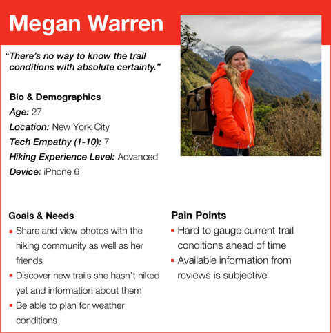
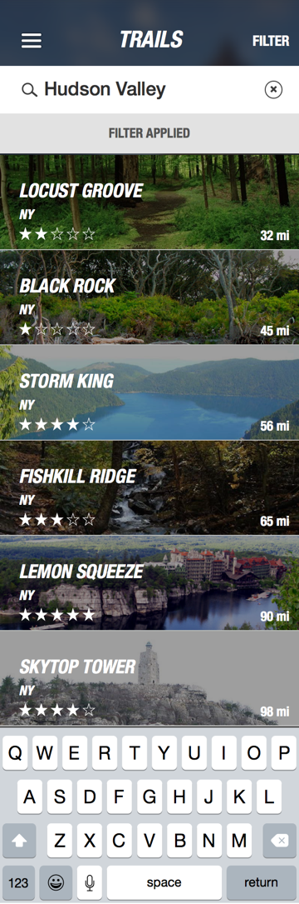
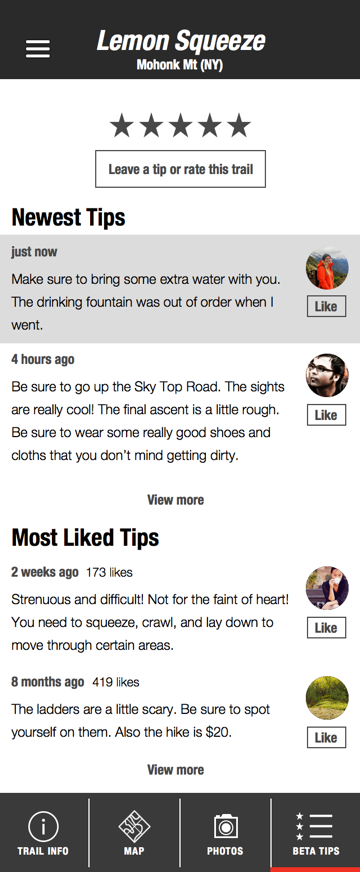
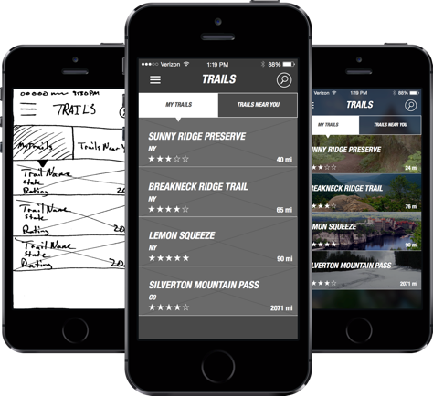
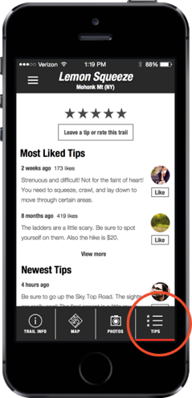

Chuck Flores
User Experience Designer
Trail Brief
Overview
Trail Brief is an iOS app for every level of hiker to access current seasonal trail conditions as well as inform the community with updates and photos of trails.
Our team of two had 10 days to create a product for the hiking community. With the limited time frame we narrowed our scope to focus on the most important features the team could design. We designed a flow that allows users to search for trails, save them to their profile, and view trail information.
Project Details:
- 2 Team Members
- Timeline: 10 Days
Personas + Research
Personas were generated from our interviews with hikers. We were able to discover pain points they experienced finding information about trails. Our personas showed us what features were the most important to design. One of these personas was Megan.
Task Analysis
By creating a task analysis we were able to determine what screens we needed to design. Below is our task analysis for our persona Megan.
Research and Preparation
Megan searches for a trail in the Hudson Valley
Hike
While on the hike she posts photos.

Share and Inform
Afterwards she leaves a tip for future hikers.
Wireframes + Testing
After the initial sketches our team quickly created a medium fidelity prototype. We remained in medium fidelity throughout the testing process to allow for quick and easy changes no matter how big or small.
Iterating Icon and Navigation
Throughout the testing process users were confused when we asked them to leave a helpful comment about the trail. We A/B tested different icons and words. This helped us to understand users perceptions of the different icons and words.
